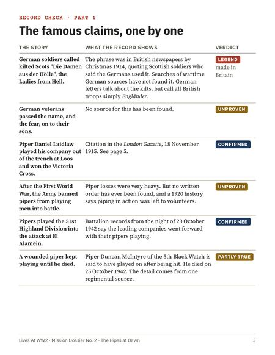
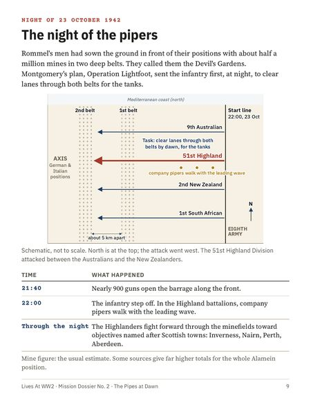
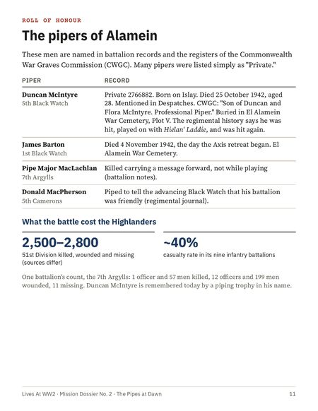
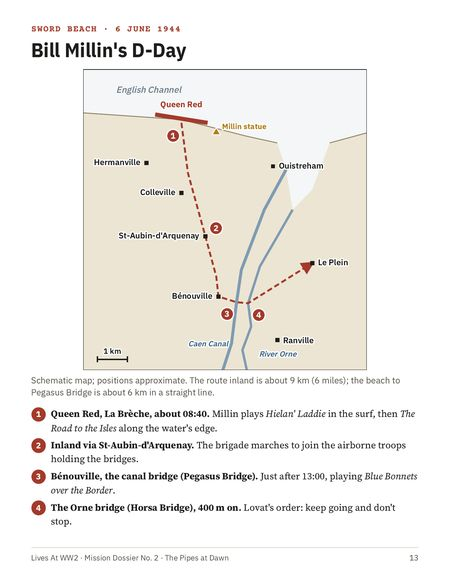
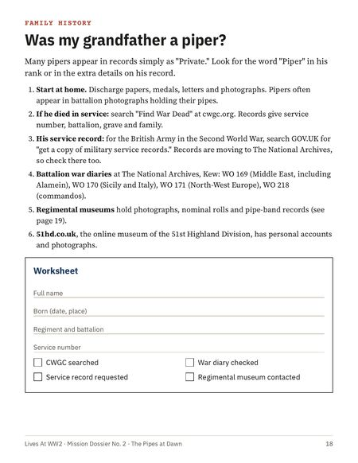
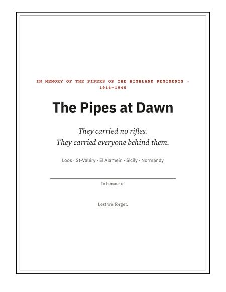
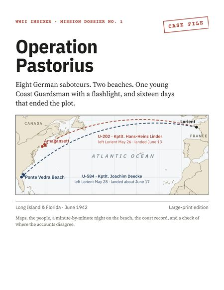

Trace Your Veteran
Find your relative's unit and service record, even if the 1973 archive fire took his file.
New · Mission Dossier No. 2
A man with no rifle, walking upright ahead of the attack, playing the bagpipes. Follow Scotland's battle pipers from the gas at Loos in 1915 to the minefields of El Alamein and Bill Millin on D-Day, and find out which famous stories are true and which are only legend.
$10 US dollars · one-time payment
Secure checkout by Gumroad. Your download link arrives by email straight away.

What's inside
These pages are shown exactly as they print. Tap any page to see it full size.






Made for reading
Body text is 14 point, with strong contrast. No squinting at tiny captions.
Which stories are documented, which rest on one man's word, and which were made up later.
Five maps, the Victoria Cross citation, and war-grave records for named pipers.
A guide and worksheet to find out if a relative served as a piper, plus museums to visit.
How buying works
A secure Gumroad checkout opens. Gumroad is a well-known shop for digital downloads.
Type your email address and card details. The price is in US dollars; your bank converts it if you pay in another currency.
Your receipt arrives within a minute with a "View content" link. Click it to download the PDF. Keep the email: the link works again any time.
Stuck at any step? Email yesmidealab.contact@gmail.com and we'll help you personally.
This dossier goes with our documentary "What German Soldiers Said About the Scottish Highlanders' Bagpipes at Dawn." Watch it free on YouTube, then keep the dossier beside you.
Also available

In June 1942, German submarines landed eight saboteurs on American beaches. Within sixteen days, every one of them was caught. 15 large-print pages: the maps, the men, the night on the beach and the trial.
$7 US Letter and A4 included
Subscribe on YouTube to hear the moment each one is ready.
Find your relative's unit and service record, even if the 1973 archive fire took his file.
How Ford's giant plant built a B-24 bomber an hour, explained with clear diagrams.
Follow the 1942 U-boat attacks off the American coast, step by step, map by map.
The 19-year-old Japanese pilot whose crash-landed Zero gave the Americans their first intact one to study.
Questions
No. It is a digital file (a PDF) that you download and read on screen or print yourself. Nothing is posted to you.
On most computers, tablets and phones you simply tap or double-click the file. If it won't open, the free Adobe Acrobat Reader works on every device. Email us if you get stuck.
Yes. The Pipes at Dawn is set for US Letter paper. Choose "Actual size" or "100%" in the print settings. On A4 paper, choose "Fit to page".
No. It adds what a video can't: maps you can study, the Victoria Cross citation, war-grave records for named pipers, the tunes, a family-history guide, and a check of which famous stories can be proved.
This edition is built from maps and diagrams drawn for it, and extracts from official records. Any archive photographs we include are public-domain wartime images.
Search your email for "Gumroad" and open the receipt: the link works again. Or email us and we'll resend it.
Email us within 30 days and we will refund you in full. No forms, no arguments.
Please buy one copy per household. To give it as a gift, buy it with the recipient's email address, or print it and hand it over. The tribute page is made for framing.